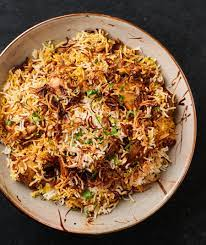

Description
Behold! An authentic Chicken Biryani recipe with simple, easy-to-follow instructions (no curveballs!) and mouthwatering, traditional Pakistani and Indian flavor. This recipe includes tips on how to get fluffy rice, tender chicken, and the distinct biryani taste. Tested to perfection!
Recipie
Ingredients
You will need the following Ingredients
- Oil/Ghee
- Onions
- 1Bone-in, cut up, skinless chicken
- Whole spices
- Garlic + Ginger
- Tomatoes
- Yogurt
- Rice
Steps
- Prepare the biryani masala (or use store-bought) and marinate the chicken
- Cook the chicken curry. While it’s cooking over low heat, prepare the rice.
- Bring it all together for a final steam (‘dum‘).